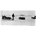
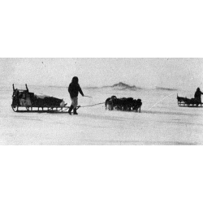
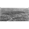
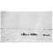
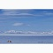

| |
|
|
|
|
|
|
 |
 |
 |
|
 |
|
 |
After World War II, aerial reconnaissance revealed a number of large tabular bergs drifting slowly clockwise in the arctic basin north of Ellesmere Island. Several arctic researchers and scientists have suggested these so-called ice islands—breakaway pieces of its ancient ice shelf—are probably what Cook mistook for “Bradley Land,” and Cook's advocates have repeated these statements to support the doctor's claim.

Cook gave this description of “Bradley Land”: “The lower coast resembled Heiberg Island, with mountains and high valleys. The upper coast I estimated as being about one thousand feet high, flat, and covered with a thin sheet ice.”
Ice islands are no more than 100 to 200 feet thick, total. They are nearly flat with only rolling undulations and rise only about 25 feet above sea level. Cook's “Bradley Land” therefore does not remotely resemble an ice island, or even an ice island magnified by mirage. And Cook published two pictures of the high, mountainous land he called “Bradley Land.”
Cook's Inuit companions are reported to have said these pictures were of two small islands off the northwest coast of Axel Heiberg Island; others believe they are of the coast of Heiberg Island itself, though the pictures have never been duplicated.
Ren Bay
has been suggested as the site. Ellesmere trekker Jerry
Kobalenko
reports he could not match the picture exactly to that site, but Cook
might have taken it at a time when fog obscured prominent landmarks, as
he did in Alaska, making it impossible to duplicate now. In
each
picture the photographer is standing on a point above the flat
ice. Kobalenko’s was taken off a ten-foot hillock.
| «- Cook's evidence refuted | The Glacial Island -» |